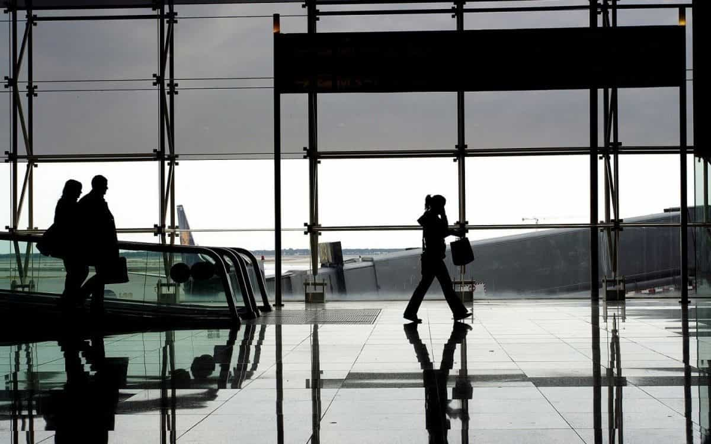
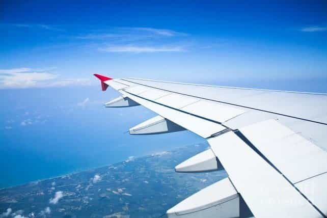

Bryce Conway is the Founding Editor of 10xTravel.com and the Author of Takeoff: How to Travel the World for Next to Nothing. He writes about travel and lifestyle design for thousands of readers each month on his website.


Traveling is arguably the most effective way on the planet to develop as a person, learn about yourself, and discover what it means to be human. This idea has been written about dozens of times throughout the manosphere for one simple reason. It’s an undeniable truth.
Traveling offers the modern-man a chance to get out of his comfort zone, eliminate the distractions of day-to-day life, and learn how to be self-reliant. However, there is one major catch. Traveling is really fucking expensive.
Which means that the vast majority of men have to prioritize travel with other financial goals such as saving for retirement, starting a business, or putting money aside to purchase a home.

Travel hacking is the process of earning tons of frequent flyer miles through things like credit card sign-ups and other promotions and using those miles to book tons of really cheap travel.
Think of it like extreme couponing, only its 10x more lucrative (literally), requires a fraction of the time, and it doesn’t have the social stigma associated with clipping coupons and storing a bunch of junk in your basement.
The concept of travel hacking is hard to grasp at first but it really is quite simple. In fact, the basic travel hacking process can be broken down in to 5 simple steps.
1. Apply for a rewards credit card that gives you some sort of sign-up bonus (2 free flights, 50,000 points, free hotel nights, etc.)
2. Complete the required steps to earn the bonus (usually just a minimum spending requirement)
3. Use your sign-up bonus points/miles to book cheap travel
4. Cancel the credit card before the annual fee comes due
5. Repeat as needed
It’s that easy.
The most extreme travel hackers repeat this process ~15-20 times per year and end up taking multiple international trips annually for pennies on the dollar. (I just did a weekend trip to Amsterdam for less than $200.)
Put simply, travel hacking works because it allows you to beat the credit card companies at their own game.
Credit card companies make a large portion of their profits by exploiting people who are financially irresponsible. They provide a product that allows you to live above your means, use marketing tactics to make you believe that you can afford anything (pay attention to their commercials, you’ll see what I mean), then make you their slave by charging outrageous interest rates on the debt that you inevitably accrue.
And it works, and works incredibly well. So well that the average American household has $15,611 of credit card debt. With typical interest rates on this debt hovering around 15%, this is an incredibly profitable business for these companies.
Knowing this, credit card companies offer large sign-up bonuses in the form of frequent flyer miles, cash back, etc. on their cards to encourage people to sign up.
These bonuses are essentially a form of bait to lure you in to the trap of credit card debt.
Travel hacking works by systematically mining these bonuses while avoiding the trap of falling into debt.

No, and anyone who tells you otherwise has no idea how credit scores work.
Here is a quick rundown on how applying for a large number of credit cards can affect your credit score.
Every time you apply for a credit card (or any form of credit) your credit score will dip by ~2-5 points according to FICO. There is a long and somewhat complicated answer for why this happens, but let’s be honest, you couldn’t care less. This is the way that credit scoring works and neither you nor I can change that.
(If you are actually curious, google “travel hacking effect on credit”. You’ll find a ton of articles that support my claim.)
This ~2-5 point dip is short-lived and is easily offset by the positive effects of having another credit account on your credit report. Mainly the increased amount of available credit (which reduces your credit utilization) and the increased number of on-time payments that you will be making.
I have personally seen my credit score rise more than 80 points since I have started travel hacking.

The catch is that this only works when you use your new credit cards responsibly.
If you end up spending beyond your means then you have fallen in to their trap.
So you need to take a long, hard look in the mirror and be brutally honest with yourself before getting started. If you’re the type of person that can’t control your spending then travel hacking is definitely not for you.
As we discussed above, the first step of travel hacking is to apply for a rewards credit card that gives you some sort of sign-up bonus. There are dozens of these cards out there so let’s start with perhaps the most basic one on the market. The Barclays Arrival Plus.
The Barclays Arrival Plus offers 40,000 miles as a sign-up bonus after you spend $3,000 in the first 3 months. These miles can be redeemed at a rate of 1 penny a piece to erase travel expenses made within 120 days.
So you can erase a $300 airline ticket purchase with 30,000 points, a $55 taxi fare with 5,500 points, etc. You get the point. You also get a 10% bonus on any points redeemed, meaning that the 40,000 sign-up bonus points give you $440 in travel statement credits.
These statement credits can be used to erase just about any travel expense. Airline tickets, hotel rooms, taxis, Uber fares, you name it.
Another major advantage of this card is that you can take advantage of the signup bonus before you meet the $3,000 minimum spending requirement. Simply use the card to pay for your trip and erase the charges after you have earned the bonus points.
The Barclays Arrival Plus has no fee for the first year, meaning you could cancel the card 11 months after opening it and end up paying nothing out of pocket. So in some cases you might actually be able to get your US flight literally for free.
Again, a concept that defies traditional logic but is really quite simple. That’s a lot to digest at once, so let’s boil it down to the basics.

1. Open a Barclays Arrival Plus credit card
2. Use the Barclays Arrival Plus to pay for your next flight
3. After meeting the $3,000 minimum spending requirement, use your bonus miles to erase $440+ of your airfare charge
4. Cancel the card 11 months after applying to avoid paying any sort of fees
Simple, effective, and literally free. You won’t pay a dime to use this strategy.
And as I mentioned before, you can continually repeat this process to earn an endless amount of points and miles and start traveling the world for next to nothing.
Start your journey to becoming a better man today.
Read More: 14 Tips To Travel Cheaply Around the World